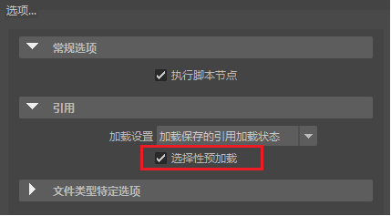

- 在“打开场景”(Open Scene)窗口中启用“选择性预加载”(Selective preload)选项的情况下打开场景时，将显示“预加载引用编辑器”(Preload Reference Editor)。

“打开场景”(Open Scene)选项中的“选择性预加载”(Selective preload)选项可打开“预加载引用编辑器”(Preload Reference Editor)
需要在打开场景时选择要加载或卸载的特定文件引用时，可使用“预加载引用编辑器”(Preload Reference Editor)。
使用“预加载引用编辑器”(Preload Reference Editor)有选择地加载文件和代理引用
- 选择“文件 > 打开”(File > Open) >
 。
。
- 在打开场景选项(Open Scene Options)的“引用”(Referencing)选项区域中，启用“选择性预加载”(Selective Preload)，然后单击“打开”(Open)。
将显示文件浏览器，其中列出了项目的默认场景目录。
- 选择包含要加载的文件引用的文件，然后单击“打开”(Open)。
将显示“预加载引用编辑器”(Preload Reference Editor)。“预加载引用编辑器”(Preload Reference Editor)列出了场景的所有可用的文件引用。根据设置“引用”(Referencing)选项的方式，某些文件引用将在“预加载引用编辑器”(Preload Reference Editor)中显示为已加载或未加载。当某个图标显示在特定文件引用的旁边时，这指示该引用存在一个或多个代理引用。
注：使用编辑器顶部“选项”(Options)菜单中的“保留嵌套引用的加载状态”(Preserve load state of nested references)选项，可以设置父引用的加载状态是否影响其下嵌套的子引用加载状态。默认设置为禁用，切换引用的加载状态会影响其中任何子引用的加载状态。
- 通过执行下列操作之一，在“预加载引用编辑器”(Preload Reference Editor)中选择一个或多个项目：
- 单击引用旁边的复选框，以指示希望加载该引用。
- 在某项目上单击鼠标右键，然后从显示的菜单中选择“调入已加载的引用”(Bring in Reference Loaded)或“调入未加载的引用”(Bring in Reference Unloaded)。
- 在某个项目上单击鼠标右键，然后从显示的菜单中选择“将活动代理设置为”(Set Active Proxy To)。当文件引用包含一个或多个代理引用时，将显示“将活动代理设置为”(Set Active Proxy To)选项。设置“活动代理”(Active Proxy)后，可通过在“将活动代理设置为”(Set Active Proxy To)子菜单中显示可用代理引用的列表（按其代理标记），选择要将哪个代理引用加载到场景中。
提示：
使用“预加载引用编辑器”(Preload Reference Editor)时，有可能同时为多个代理设置加载或活动状态。显示在“将活动代理设置为”(Set Active Proxy To)子菜单中的代理标记列表（当选择了多个文件引用时）是从当前用于与选定文件引用相关联的代理集的所有代理标记生成的。
在“选项”(Options)菜单中启用“保留嵌套引用的加载状态”(Preserve load state of nested references)